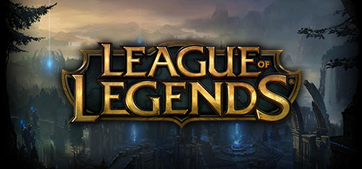
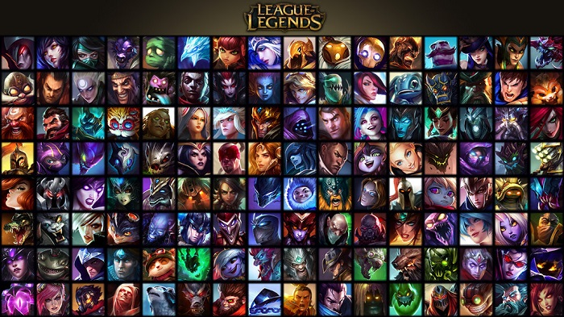
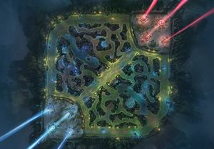

League of Legends is a 3D, third-person multiplayer online battle arena (MOBA) game. The game consists of 3 current running game modes: Summoner's Rift, Twisted Treeline, and Howling Abyss. Another game mode, The Crystal Scar, has since been removed. Players compete in matches, lasting anywhere from 20 to 60 minutes on average. In each game mode teams work together to achieve a victory condition, typically destroying the core building (called the Nexus) in the enemy team's base after bypassing a line of defensive structures called turrets, or towers.
Gameplay
In all game modes, players control characters called champions, chosen or assigned every match, who each have a set of unique abilities. Champions begin every match at a low level, and then gain experience over the course of the match to achieve a maximum level of 18. Gaining champion levels in matches allows players to unlock their champion's special abilities and augment them in a number of ways unique to each character. If a champion loses all their health, they are defeated, but are automatically revived in their base after enough time passes. Players also begin each match with a low amount of gold, and can earn additional gold throughout the match in a variety of ways: by killing non-player characters known as minions and monsters; by killing or helping to kill enemy players; by destroying enemy structures; passively over time; and through unique item interactions or champion abilities. This gold can then be spent throughout the match to buy in-game items that further augment each champion's abilities and game play in a variety of ways. Champion experience, gold earned, and items bought are specific to each match and do not carry over to subsequent matches. Thus, all players begin each match on more-or-less equal footing relative to their opposing team.
Game Maps
Summoner's Rift
Summoner's Rift is the most popular map in League of Legends. On this map type, two teams of five players compete to destroy an enemy building called a Nexus, which is guarded by the enemy team and a number of defensive structures called turrets, or towers. One nexus is located in each enemy base on opposite sides of the map, in the lower-left and upper-right hand corners. These structures continually create weak non-player characters known as minions, which advance toward the enemy base along three paths: top, middle, and bottom lanes. Players compete to advance these waves of minions into the enemy base, which allows them to destroy enemy structures and ultimately win the match. Between lanes are neutral areas of the map known as the 'jungle', arrayed in four quadrants. A shallow river divides the map between the teams, but doesn't actually impede movement; all champions can wade through it no differently than dry land.
Howling Abyss
The Howling Abyss is used for "ARAM" (All Random All Mid) matches, and is five vs. five. The difference between the Abyss and the other maps is that there is only a single narrow lane of Turrets and an Inhibitor, and no neutral jungle area. Thus, rather than skirmishes and hidden movement, the Abyss focuses exclusively on large team-fights in the sole middle lane. Players cannot return to their allied base to replenish health and mana or purchase items unless they have been killed. ARAM was launched as an official mode in September 2013.